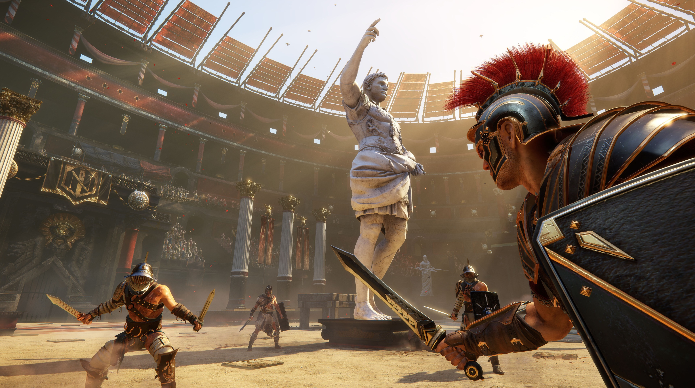
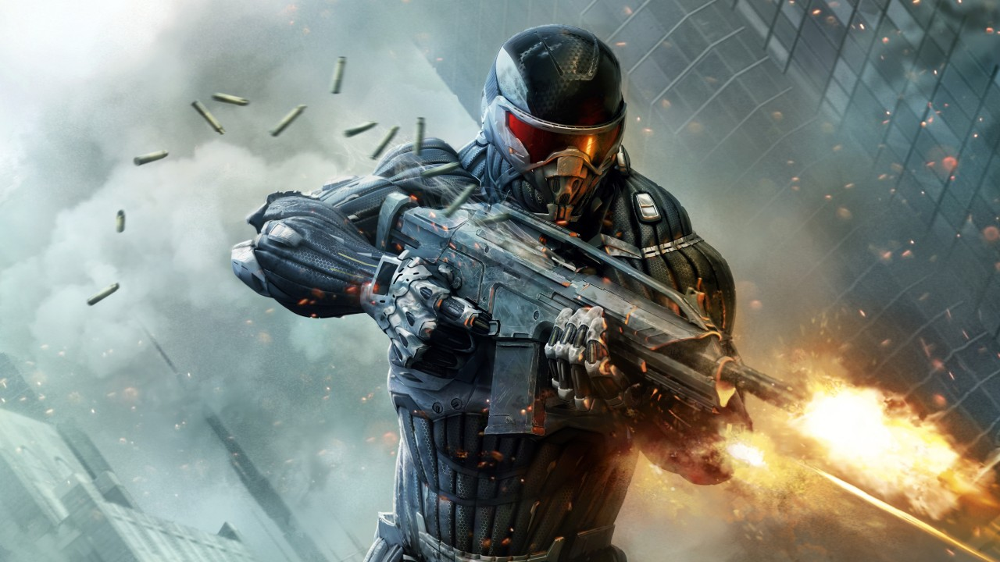
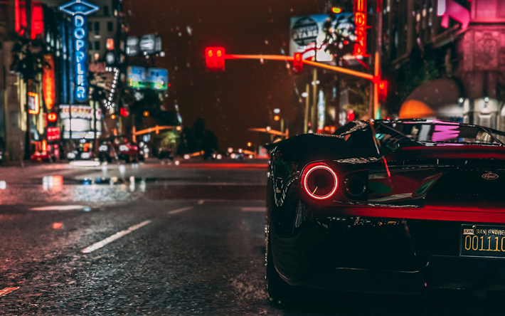
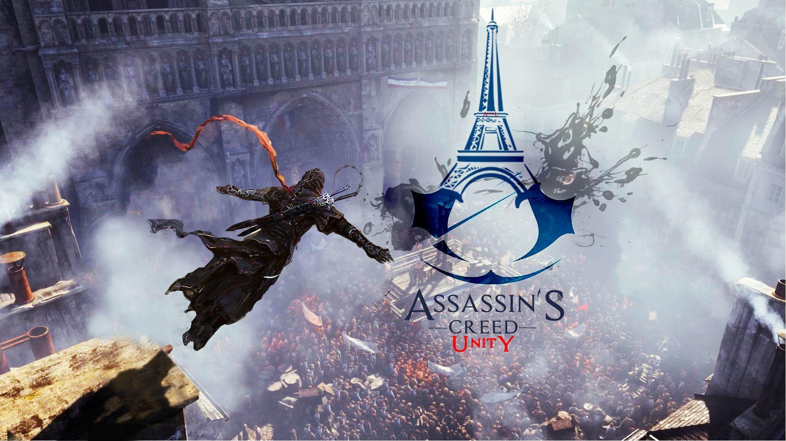
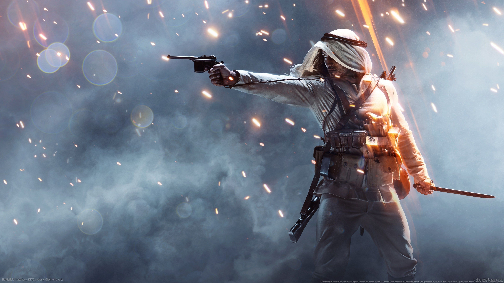
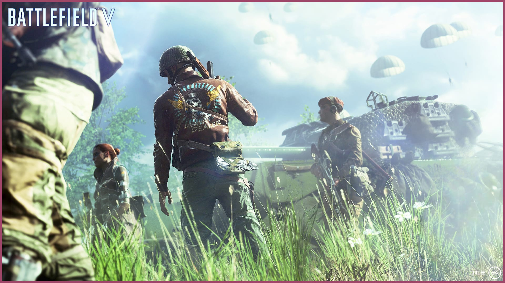

Hepinize Merhablara bu gün KODBİL olarak bu gün sizlere 2019'un en sevilen oyunlarnı ve oyunların sistem gereksinimlerini listeledik. İYİ OKUMALAR...
1.SIRADA "Ryse: Son of Rome"

SİSTEM GEREKSİNİMLERİ
Ryse: Son of Rome PC Sistem Gereksinimleri (Minimum 720p 60 FPS)
•Minimum sistem gereksinimleri. •İşletim Sistemi: Windows Vista SP1, Windows 7 veya Windows 8 (64bit) İşlemci: Intel Dual-Core 2.8GHz/ AMD Dual-Core 3.2 GHz ya da daha iyisi. •Hafıza: 4 GB RAM. •Grafik: 1 GB video RAM'e sahip DirectX 11 destekli ekran kartı •Dahili Bellek: 26 GB boş alan.
<
2.SIRADA"Crysis 3"

SİSTEM GEREKSİNİMLERİ
•Minimum sistem gereksinimleri. •Windows Vista, Windows 7 ya da Windows 8 •DirectX 11 destekli ve en az 1GB bellekli ekran kartı •DirectX 11 destekli ve en az 1GB bellekli ekran kartı •Çift çekirdekli işlemci •2GB Bellek (3GB, Windows Vista sistemlerde) •Nvidia ve Intel tabanlı sistemler için örnek: •Nvidia GTS 450 ve Intel Core2 Duo 2.4 Ghz (E6600)
3.SIRADA"GTA V"

SİSTEM GEREKSİNİMLERİ
•İşletim Sistemi: Windows 8.1 64 Bit, Windows 8 64 Bit, Windows 7 64 Bit Service Pack 1. •İşlemci: Intel Core i5 3470 @ 3.2GHZ (4 CPU) / AMD X8 FX-8350 @ 4GHZ (8 CPU) •Bellek: 8GB. •Ses kartı: %100 DirectX 10 uyumlu. •Sabit Disk Alanı: 65GB.
4.SIRADA"Assassin's Creed: Unity"

SİSTEM GEREKSİNİMLERİ
•İşletim Sistemi: Windows ® 7 SP1 Windows 8 / 8.1 ® (Sadece 64-bit) •İşlemci: Intel Core® i5-2500K @ 3.3 GHz veya AMD FX-8350 @ 4.0 GHz veya daha yükseği. •RAM: 6 GB. •Ekran Kartı: NVIDIA GeForce® GTX 680 veya AMD Radeon HD 7970 (2 GB veya daha yükseği) •Sabit Disk: 50 GB.
5.SIRADA"Metro Redux"
SİTEM GEREKSİNİMLERİ
•İşletim Sistemi: Windows Vista, 7 or 8 (64-bit only) •İşlemci: Dual Core CPU (2.2+ GHz Dual Core CPU or better) •Bellek: 2 GB RAM. •Ekran Kartı: DirectX 10, Shader Model 4 compliant graphics cards (GeForce 8800 GT 512 MB, GeForce GTS 250, etc) •DirectX: Sürüm 10. •Depolama: 10 GB kullanılabilir alan.
6.SIRADA"Far Cry Primal"
SİTEM GEREKSİNİMLERİ
•İşletim Sistemi: Windows 7, Windows 8.1 ve Windows 10 (Sadece 64 bit) •İşlemci: Intel Core i3-550 ya da AMD Phenom II X4 955. •Ekran Kartı: NVIDIA GeForce GTX 460 (1GB VRAM) ya da AMD Radeon HD 5770 (1GB VRAM) •Bellek: 4 GB RAM. •Depolama: 20 GB Boş Alan.
7.SIRADA"BATTLEFİELD 1"

SİTEM GEREKSİNİMLERİ
•İS: 64-bit Windows 10 veya üstü •İşlemci (AMD): AMD FX 8350 Wraith. •İşlemci (Intel): Intel Core i7 4790 veya dengi. •Bellek: 16GB RAM. •Ekran kartı (AMD): AMD Radeon™ RX 480 4GB. •DirectX: 11.1 uyumlu video kartı ya da dengi.
8.SIRADA"BATTLEFİELD V"

SİTEM GEREKSİNİMLERİ
•İşletim sistemi: 64-bit Windows 7, Windows 8.1 veya Windows 10. •İşlemci (AMD): AMD FX-8350. •İşlemci (Intel): Core i5 6600K. •RAM: 8GB RAM. •Ekran kartı (NVIDIA): NVIDIA GeForce GTX 1050 / GTX 660 2GB. •Ekran kartı (AMD): AMD Radeon HD 7850 2GB. •DirectX version: DirectX 11.0. •Depolama alanı: 50GB.